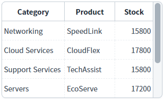
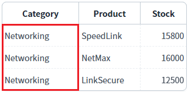
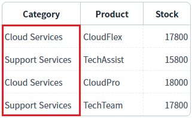
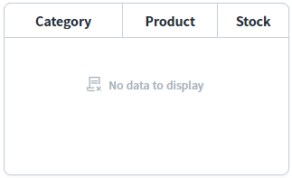
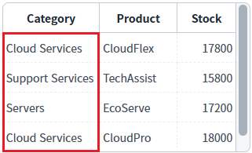

DataList의 'setColumnFilter' 메소드를 사용하여 정규 표현식으로 컬럼 데이터에 필터를 적용한 예제입니다.
이 예제는 'setColumnFilter' 메소드의 첫 번째 인자의 'type' 속성을 'regExp'로 설정하여 구현되었습니다. 'type' 속성의 설정 값이 'regExp'로 지정되면 다음과 같은 방법으로 데이터를 검색합니다.검색 대상 데이터를 문자열로 변경한 후, 사용자가 정의한 정규 표현식으로 검색합니다. 정규 표현식은 'key' 속성에 할당합니다.
'Category' 컬럼에 필터 적용 - 데이터가 'Networking'과 일치한 경우
'Category' 컬럼에 필터 적용 - 데이터 중 'Services'가 포함된 경우
'Category' 컬럼에 필터 적용 - 데이터가 'Services'와 일치한 경우
'Category' 컬럼에 필터 적용 - 데이터가 'Servers'와 일치하거나 'Services'가 포함된 경우
'DataList의 데이터 초기화' 버튼
기능 : DataList에 적용된 필터를 모두 해제하고 초기 데이터를 설정합니다.
'DataList의 필터 전체 해제' 버튼
기능 : DataList에 적용된 필터를 모두 해제합니다.
1
STEP 1: 초기 상태 확인하기
필터를 적용할 DataList와 GridView와 연결되어 있습니다. GridView를 통해 필터가 적용된 데이터를 확인할 수 있습니다. 초기 상태는 필터가 적용되지 않은 상태입니다.
Image 1.브라우저(Chrome) 실행 예시

2
STEP 2: 'Category' 컬럼에 필터를 적용합니다.
"'Category' 컬럼에 필터 적용 - 데이터가 'Networking'과 일치" 버튼을 클릭합니다.3
STEP 3: 실행된 결과를 확인합니다.
'Category' 컬럼의 데이터가 'Networking'과 일치하는 데이터가 출력됩니다.
Image 2.브라우저(Chrome) 실행 예시

영역 '로그 확인'에 출력된 로그를 확인합니다. (브라우저의 개발자 도구 콘솔에도 로그가 출력되며, 객체 형식으로 확인할 수 있습니다.) 필터 조건이 담긴 JSON을 확인할 수 있습니다.
Example 1.Log
[09:37:41] # 'Category' 컬럼에 필터 적용 - 데이터가 'Networking' | 필터 조건
[09:37:41] {
"type": "regExp",
"colIndex": "category",
"key": new RegExp("^Networking$"),
"condition": "and"
}1
STEP 1: 초기 상태 확인하기
필터를 적용할 DataList와 GridView와 연결되어 있습니다. GridView를 통해 필터가 적용된 데이터를 확인할 수 있습니다. 초기 상태는 필터가 적용되지 않은 상태입니다.
Image 3.브라우저(Chrome) 실행 예시
2
STEP 2: 'Category' 컬럼에 필터를 적용합니다.
"'Category' 컬럼에 필터 적용 - 데이터 중 'Services'가 포함" 버튼을 클릭합니다.3
STEP 3: 실행된 결과를 확인합니다.
'Category' 컬럼의 데이터에 'Services'가 포함되는 데이터가 출력됩니다.
Image 4.브라우저(Chrome) 실행 예시

영역 '로그 확인'에 출력된 로그를 확인합니다. (브라우저의 개발자 도구 콘솔에도 로그가 출력되며, 객체 형식으로 확인할 수 있습니다.) 필터 조건이 담긴 JSON을 확인할 수 있습니다.
Example 2.Log
[09:38:03] # 'Category' 컬럼에 필터 적용 - 데이터 중 'Services'가 포함 | 필터 조건
[09:38:03] {
"type": "regExp",
"colIndex": "category",
"key": new RegExp("Services"),
"condition": "and"
}1
STEP 1: 초기 상태 확인하기
필터를 적용할 DataList와 GridView와 연결되어 있습니다. GridView를 통해 필터가 적용된 데이터를 확인할 수 있습니다. 초기 상태는 필터가 적용되지 않은 상태입니다.
Image 5.브라우저(Chrome) 실행 예시
2
STEP 2: 'Category' 컬럼에 필터를 적용합니다.
"'Category' 컬럼에 필터 적용 - 데이터가 'Services'와 일치" 버튼을 클릭합니다.3
STEP 3: 실행된 결과를 확인합니다.
'Category' 컬럼의 데이터가 'Services'와 일치하는 데이터가 없기 때문에 데이터가 출력되지 않습니다.
Image 6.브라우저(Chrome) 실행 예시

영역 '로그 확인'에 출력된 로그를 확인합니다. (브라우저의 개발자 도구 콘솔에도 로그가 출력되며, 객체 형식으로 확인할 수 있습니다.) 필터 조건이 담긴 JSON을 확인할 수 있습니다.
Example 3.Log
[09:38:18] # 'Category' 컬럼에 필터 적용 - 데이터가 'Services'와 일치 | 필터 조건
[09:38:18] {
"type": "regExp",
"colIndex": "category",
"key": new RegExp("^Services$"),
"condition": "and"
}1
STEP 1: 초기 상태 확인하기
필터를 적용할 DataList와 GridView와 연결되어 있습니다. GridView를 통해 필터가 적용된 데이터를 확인할 수 있습니다. 초기 상태는 필터가 적용되지 않은 상태입니다.
Image 7.브라우저(Chrome) 실행 예시
2
STEP 2: 'Category' 컬럼에 필터를 적용합니다.
"'Category' 컬럼에 필터 적용 - 데이터가 'Servers'와 일치하거나 'Services'가 포함" 버튼을 클릭합니다.3
STEP 3: 실행된 결과를 확인합니다.
'Category' 컬럼의 데이터가 'Servers'와 일치하거나 데이터에 'Services'가 포함된 데이터가 출력됩니다.
Image 8.브라우저(Chrome) 실행 예시

영역 '로그 확인'에 출력된 로그를 확인합니다. (브라우저의 개발자 도구 콘솔에도 로그가 출력되며, 객체 형식으로 확인할 수 있습니다.) 필터 조건이 담긴 JSON을 확인할 수 있습니다.
Example 4.Log
[09:39:07] # 'Category' 컬럼에 필터 적용 - 데이터가 'Servers'와 일치하거나 'Services'가 포함
[09:39:07] {
"type": "regExp",
"colIndex": "category",
"key": new RegExp("^Servers$|Services"),
"condition": "and"
}DataList의 'setColumnFilter' 메소드를 사용하여 스크립트를 작성합니다. 'setColumnFilter' 메소드의 첫 번째 인자인 JSON 형식의 필터 조건은 아래의 스크립트 예시에 작성되어 있습니다.
Example 5.Script
// 필터 조건이 담긴 JSON var jsnFilterOptions = {}; // [필수] 검색 대상. DataList의 컬럼 ID 또는 컬럼 Index. jsnFilterOptions.colIndex = "category"; // [필수] 검색 방식. 속성 'key'에 정의된 정규표현식으로 검색. jsnFilterOptions.type = "regExp"; // [필수] 정규 표현식. 데이터가 'Servers'와 일치하거나 'Services'가 포함된 조건. jsnFilterOptions.key = new RegExp("^Servers$|Services"); // [필수] 기 적용된 필터 데이터와의 병합 조건. 최초 필터를 적용하는 경우 "and"로 할당. jsnFilterOptions.condition = "and"; // [필수] DataList 'dlt_exam'에 필터를 적용합니다. dlt_exam.setColumnFilter(jsnFilterOptions);
setColumnFilter( filterOptions )
filterOptions.colIndex
filterOptions.type
filterOptions.key
filterOptions.condition
clearFilter( )